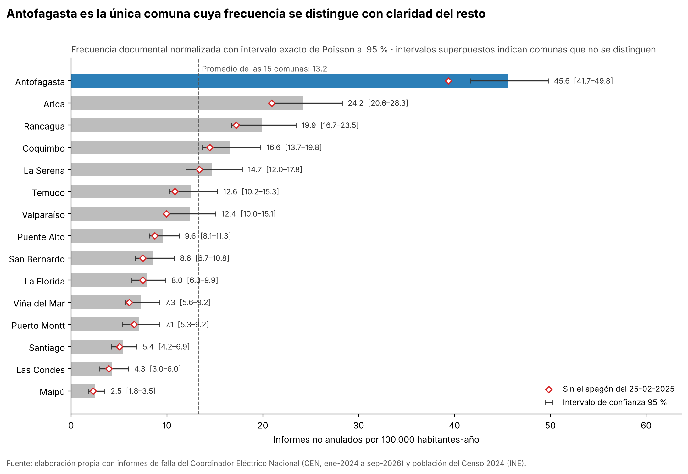
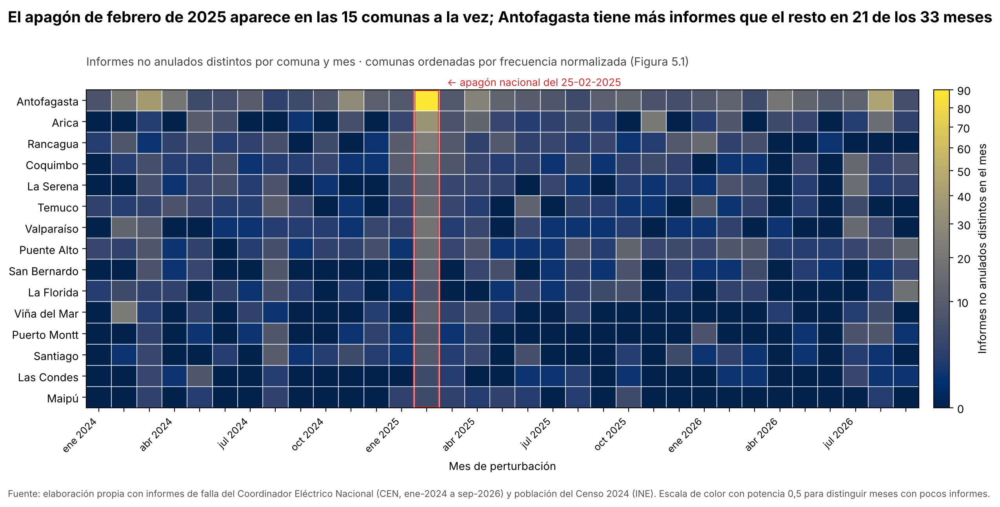
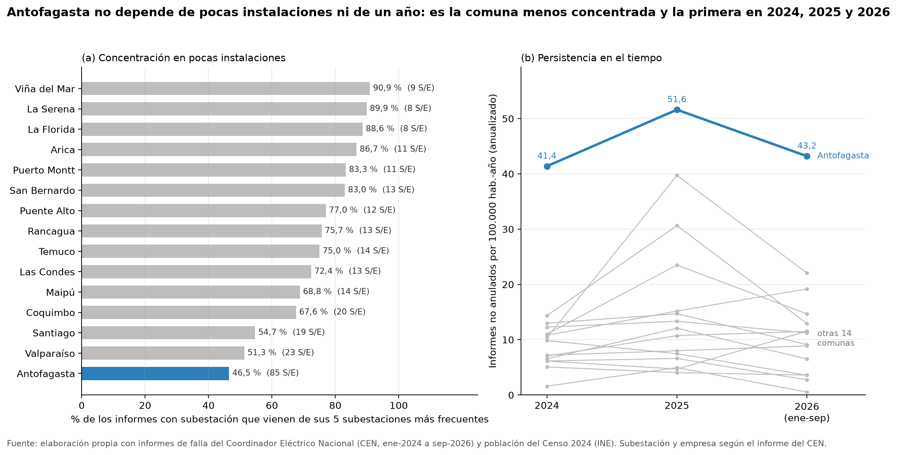

12 diapositivas de apoyo para el video. Bajo cada una va la nota para quien expone, con el tramo de tiempo propuesto. El guion completo está en guion_video.md. Para imprimir o exportar a PDF se ocultan las notas.
MCDI500 · Programación para la Ciencia de Datos · Sumativa 3
Grupo 7 · Jairo Barraza Salazar · Javier Huamani Barrera · Jean Paul Salas Meneses · Pavel Chávez San Martín
Docente: Dr. Omar Salinas · Magíster en Ciencia de Datos e Inteligencia Artificial · Universidad Andrés Bello · Noviembre de 2026
Diapositiva 1 · nota para quien expone: Jean (0:00–0:35). Presenta al grupo y a los cuatro integrantes. Pasa de inmediato a la pregunta en la diapositiva siguiente.
Pregunta y objetivo
Comparar entre comunas la frecuencia de informes, la causa más recurrente, la duración documental y el consumo reportado, con su incertidumbre y de forma reproducible.
Ni cortes a clientes ni SAIDI: el CEN informa fallas, no clientes afectados. Medimos exposición documentada.
Diapositiva 2 · nota para quien expone: Jean (0:00–0:35). La pregunta en una frase. Aclarar desde el inicio que contamos informes del CEN, no cortes a clientes: eso ordena todo lo que viene después.
Contexto y datos
33
publicaciones mensuales del CEN, de enero de 2024 a septiembre de 2026
18.019
registros consolidados, con 40 variables
15
comunas más pobladas según el Censo 2024 del INE
100 %
de los vínculos homologados con el código comunal del INE
Un informe puede nombrar varias comunas. Una tabla puente informe-comuna evita contar cuatro informes donde había uno.
Diapositiva 3 · nota para quien expone: Jairo (0:35–1:40). A quién le sirve: municipios, la SEC y la planificación de resiliencia. Las cuatro cifras. La tabla puente. El apagón del 25-02-2025 y cómo se trató en F2.
Metodología
F1
Pregunta, objetivos, entorno virtual y dependencias con versión fija
F2
Consolida 33 ZIP, limpia, homologa con el INE y exporta 7 CSV con SHA-256
F3
Código único en src/, clases que aprenden, eficiencia medida; F3 reproduce F2 byte a byte
F4
Incertidumbre, evolución mensual, sensibilidad a Antofagasta y 8 figuras
Cada fase lee lo que exportó la anterior. El orden de ejecución está en el README.
Diapositiva 4 · nota para quien expone: Pavel (1:40–2:55). Una frase por fase. Lo importante: cada fase consume lo que exportó la anterior, y F3 verifica que reproduce F2 con SHA-256.
Arquitectura y calidad
| Módulo en src/ | Responsabilidad |
|---|---|
| territorio.py | Normaliza comunas y separa los vínculos informe-comuna |
| transformadores.py | Clases que aprenden de los datos: herencia y encapsulamiento |
| pipeline.py | Recorre los pasos sin preguntar su clase: polimorfismo |
| incertidumbre.py | Intervalo exacto de Poisson y bootstrap de la mediana |
| sensibilidad.py | Concentración por instalación y panel con y sin una comuna |
79
pruebas: casos normales, límite y excepciones
1,8–1,9×
más rápida la versión vectorizada, con 8,3 → 5,3 MB de memoria
F3 = F2
resultados idénticos byte a byte (SHA-256)
Diapositiva 5 · nota para quien expone: Pavel (1:40–2:55). Un módulo por responsabilidad: corregir una causa mal escrita toca un solo archivo (la tabla de equivalencias). Eficiencia medida con timeit y tracemalloc, verificando antes que las dos versiones dan lo mismo. Ejecutar los notebooks no modifica archivos versionados.
Demostración
1
Crear el entorno e instalar las 10 dependencias
python -m venv .venv && pip install -r requirements.txt
2
Ejecutar F1 → F4 con Restart & Run All
6 notebooks · numeración continua desde 1
3
Correr las pruebas y el núcleo de F3
python -m unittest discover tests → 79 OK
Diapositiva 6 · nota para quien expone: Jean (2:55–3:35). Grabación acelerada de la pantalla: clon, instalación, Restart & Run All del notebook F4 y las 79 pruebas en verde. Volver a esta diapositiva si la grabación se corta.
Resultado 1 · Contexto

Qué muestra
Informes por 100.000 hab.-año, con su intervalo exacto de Poisson al 95 %.
Qué se infiere
Antofagasta (45,6; IC 41,7–49,8) no se superpone con ninguna. En 13 de 14 pares vecinos los intervalos se superponen.
Límite
Poisson supone informes independientes; la población no es número de clientes.
Diapositiva 7 · nota para quien expone: Javier (3:35–5:00). El ranking se lee por grupos, no por puestos: Antofagasta claramente arriba, Rancagua supera a Maipú, pero La Serena y Temuco no se distinguen. Los rombos rojos son la frecuencia sin el día del apagón.
Resultado 2 · Contraste

6,6×
la mediana mensual: 283 vínculos en febrero de 2025
1 cambio
sin el 25-02-2025: Viña del Mar y Puerto Montt (11.º y 12.º)
Límite: se excluye solo el día del apagón; los informes de días cercanos se mantienen.
Diapositiva 8 · nota para quien expone: Javier (3:35–5:00). El apagón aparece en las 15 comunas a la vez, pero sin ese día Antofagasta pasa de 45,60 a 39,35 y sigue primera. Duración: la mediana más alta (Valparaíso, 3,47 h) no se distingue del resto, y Las Condes, Maipú y Viña del Mar tienen baja precisión.
Resultado 3 · Resolución

−22,1 %
frecuencia agregada sin Antofagasta: de 12,74 a 9,93
7,9 %
de la población, pero 28,2 % de los vínculos
Límite: subestación y empresa tal como las informa el CEN.
Diapositiva 9 · nota para quien expone: Pavel (5:00–5:45). 85 subestaciones y 51 empresas: las cinco más frecuentes reúnen el 46,5 %, la menor concentración de las 15. Primera en 2024, 2025 y 2026. Por eso las cifras conjuntas se informan con y sin Antofagasta.
Limitaciones
Contamos informes documentales del CEN, no clientes sin suministro.
Poisson supone informes independientes; el apagón genera muchos a la vez.
Solo se miden informes finalizados; los pendientes podrían ser los más largos.
2026 tiene nueve meses y la población 2024 es un denominador de contexto.
Diapositiva 10 · nota para quien expone: Jairo (5:45–6:20). Una frase por tarjeta. Las limitaciones son parte del resultado: dicen hasta dónde se puede afirmar cada cifra.
Conclusiones
Conclusiones
Mejoras propuestas
Diapositiva 11 · nota para quien expone: Jean (6:20–7:00). Tres conclusiones y dos mejoras, cada una con su número. No decir más de lo que los datos permiten: son asociaciones documentales, no causas.
Grupo 7 · MCDI500
Gracias
Repositorio con los notebooks F1–F4, el código en src/, las 79 pruebas y el changelog:
github.com/jeanpaulsalasmeneses-lab/Proyecto_MCDI500
El uso de inteligencia artificial como apoyo está declarado en el informe.
Diapositiva 12 · nota para quien expone: Jean (6:20–7:00). Cierre con el enlace al repositorio. Cortar la grabación cerca de los 7:00.